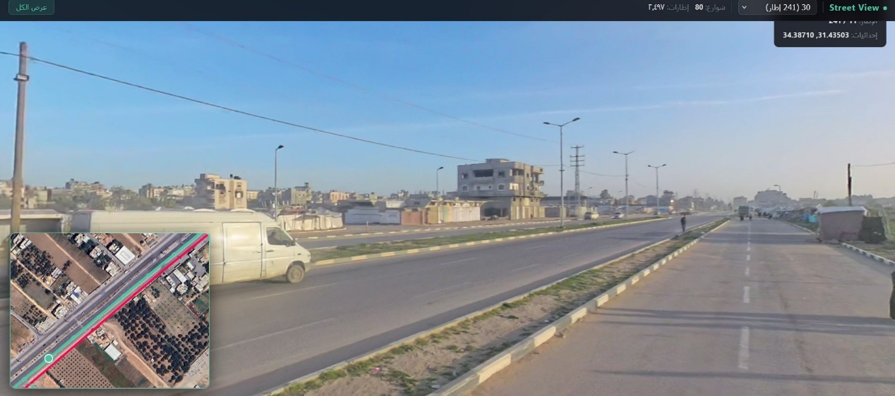
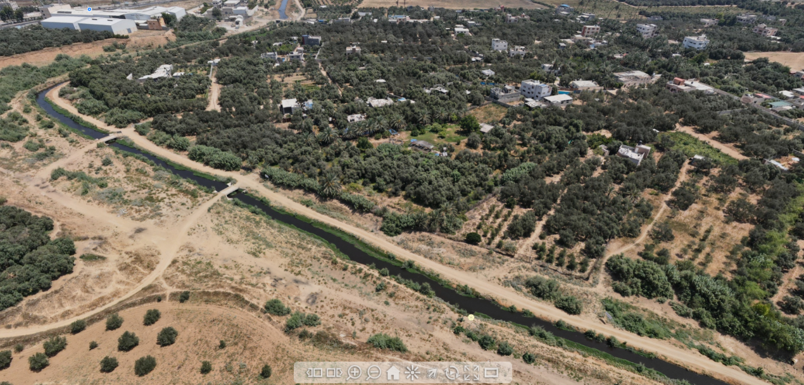

Street View 360 Documentation
Building a visual road archive that reduces repeat field visits.
A public-safe Street View-style workflow for documenting roads, neighborhoods, assets, and visual conditions inside a municipal GIS environment.
Problem
Road and neighborhood verification depended on repeated site visits and scattered photos. Teams needed one visual reference linked to the municipal map.
My Role
Organized visual documentation, indexed it spatially, and prepared a safe public representation that demonstrates the workflow without exposing sensitive locations.
Workflow
- Plan road coverage and visual documentation routes.
- Collect 360-style imagery and organize by road segments.
- Index visual records against GIS references.
- Prepare navigation and verification workflow for technical teams.
- Publish only general screenshots for portfolio use.
Results / Impact
55 kmroads documented
360visual verification workflow
Fewerrepeat field visits
Visual Proof

